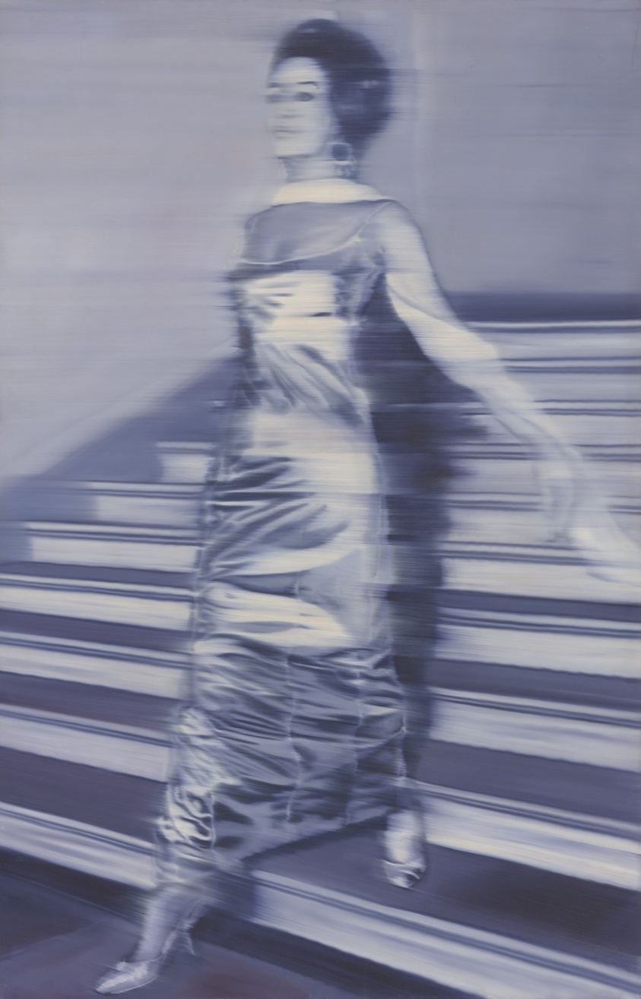
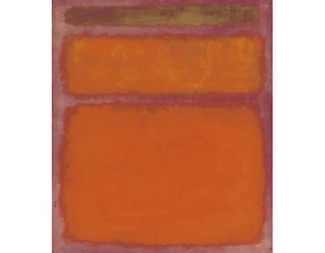

A Foundation Embedding for Art
Understanding what appeals to people at the level of how they perceive the world.
On public data. Live on Telegram right now.
Rijksmuseum, WikiArt, Met, National Gallery of Art.

Art Genome curates by hand. Rasa learns from the art.
Nobody told it what Impressionism is.

Woman Descending the Staircase, 1965
Orange, Red, Yellow, 1961
One model that sees the art, reads the biography, watches what collectors do.
Each collector gets a profile that evolves with their behavior.
Visual features predict preference. Do they predict market value?
Each contributor's actual impact, measured mathematically.
Open-source platform. Every step recorded and auditable.
We're building what it should have been.
The science of how people see and value art — running live, at scale.